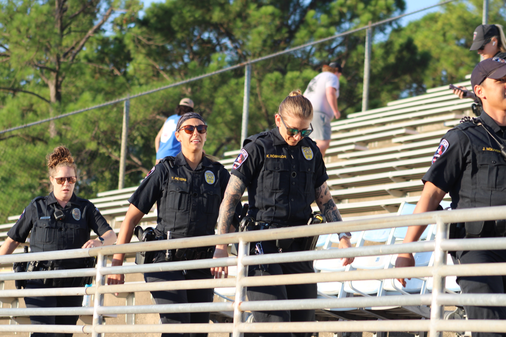
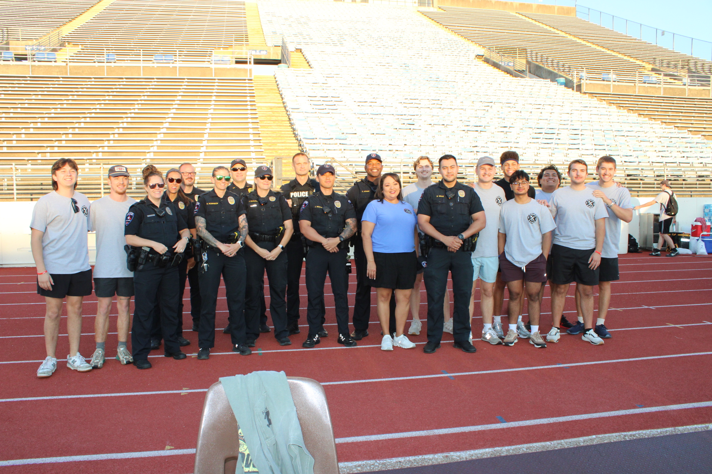

About Steps of Valor
First responders spend their lives helping others. They should not have to carry the hardest parts alone.
Steps of Valor exists to honor their service and build stronger paths to mental-health, wellness, and community support.
The need
Service does not end when the call is over.
First responders regularly enter situations most people spend their lives trying to avoid. The physical risk is visible. The emotional weight is easier to miss.
Repeated exposure to crisis, loss, injury, and uncertainty can follow a responder home. It can affect sleep, relationships, work, and family life. Yet the culture of the profession can make it difficult to say that help is needed.

Our mission
Honor the service. Strengthen the person behind it.
Our mission is to connect firefighters, law-enforcement officers, EMS professionals, dispatchers, emergency responders, and their families with support that reflects the realities of their work.
Through advocacy, education, wellness, and community support, we help make room for honest conversations and reinforce that seeking help is a sign of strength.
Mental health
Support starts with making room for an honest conversation.
Steps of Valor is developing direct resource and wellness initiatives around four priorities.
Resource access
Make trustworthy mental-health and wellness information easier to find and understand.
Peer connection
Support shaped by people who understand first-responder culture and experience.
Wellness education
Encourage proactive conversations about stress, trauma, resilience, and family well-being.
Community assistance
Build partnerships that can strengthen responders and the families who stand beside them.
Steps of Valor does not provide clinical or emergency services. Call or text 988 for free, confidential emotional support. In an immediate emergency, call 911.
September 11, 2026
The 9/11 Memorial Stair Climb turns remembrance into action.
First responders and community members climb together to remember those lost on September 11 and honor the courage of those who answered the call.

In the news
A community climbing in remembrance.
The Shorthorn documented first responders and community members gathering at Maverick Stadium for Steps of Valor.
Read the coverageStand with those who serve
Stand with first responders and their families.
Your support helps continue the Memorial Stair Climb and expand the reach of Steps of Valor.